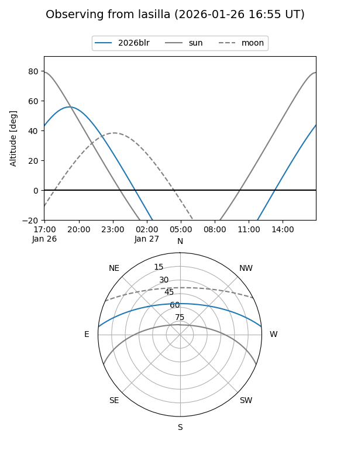
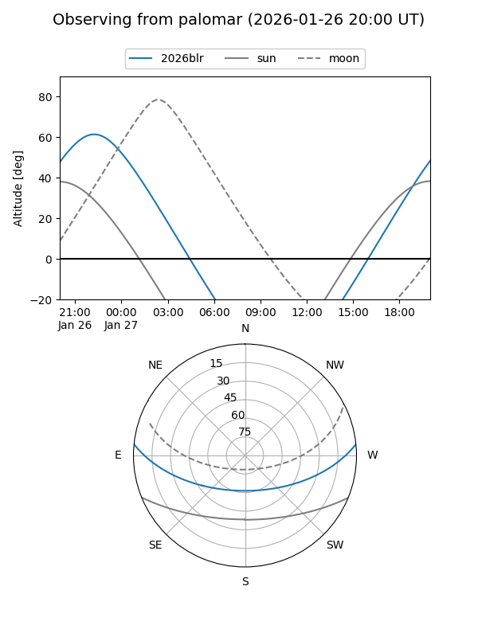

2026blr
Target 2026blr at 2026-01-27 06:06
Aliases and brokers:
FINK: link
Lasair: link
ALeRCE: link
TNS: link
YSE: link
alt names
ZTF26aaawpwq (ztf,fink_ztf)
2026blr (tns,yse)
Coordinates:
equatorial (ra, dec) = 342.5552,+4.68744
equatorial (HMS+DMS) = 22:50:13.25,+04:41:14.80
galactic (l, b) = (75.6949,-46.76458)
Flags:
Photometry:
last ztfg=18.54, ztfr=18.72
1 ztfg, 1 ztfr detections
Lightcurve

Visibility


Additional plots